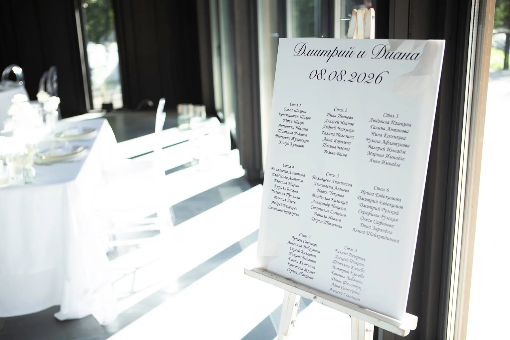
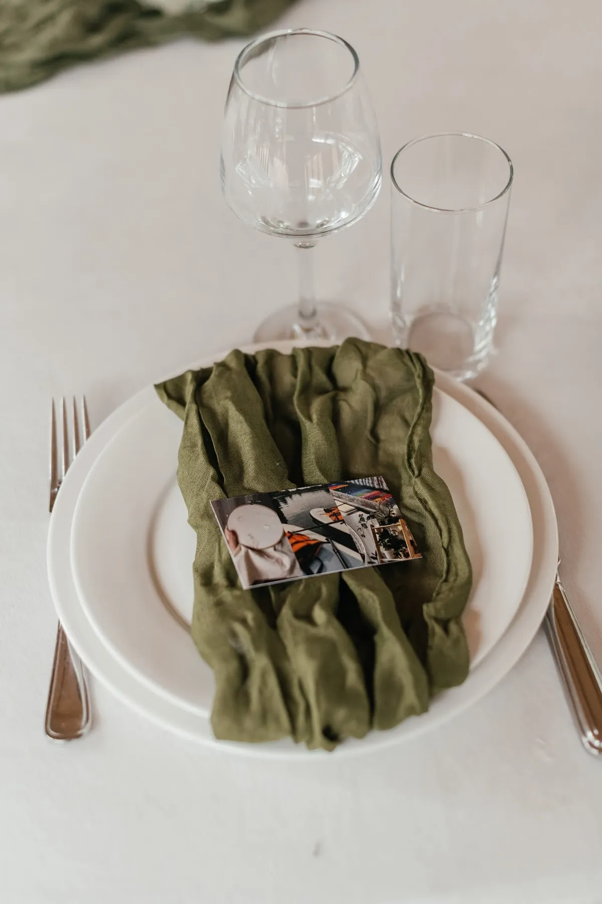

План рассадки — это и логистика, и часть декора: гости видят его первым, когда входят в зал. Рассказываем, как его составить без обид и как оформить, чтобы он выглядел частью свадьбы, а не листком с принтера.
Как составить
- Соберите финальный список гостей и отметьте, кто с кем знаком.
- Получите у площадки схему зала: форма и количество столов, сколько мест за каждым.
- Сначала рассадите «ядра» — семьи, друзей, коллег — потом распределите остальных.
- Посадите ближе к президиуму родителей и самых близких.
- Оставьте план на пару дней и проверьте свежим взглядом — и ещё раз после последних подтверждений.
Как оформить
План рассадки повторяет палитру и шрифты свадьбы. Популярные варианты — табличка на мольберте, стена с карточками, зеркало или акрил с надписями. Столы можно не только нумеровать, но и назвать — например, городами или любимыми местами пары. На каждом столе — номер или название в той же стилистике.
Совет: располагайте план у входа в зал, но не в узком проходе — у него всегда собирается группа гостей.


Карточки и навигация
Карточка с именем на тарелке помогает гостю найти своё место и становится маленьким элементом декора. Указатели к церемонии, гардеробу и бару особенно нужны на больших загородных площадках.


Как заказать
Мы оформляем план рассадки, номера столов и навигацию в одной стилистике с декором. Расскажите о дате и площадке — предложим идею и посчитаем смету.
Частые вопросы
Обязательно ли делать план рассадки?
Для свадьбы от 20–30 гостей — очень желательно: без него в начале банкета возникает путаница, а пары и семьи оказываются за разными столами.
Когда составлять план рассадки?
Черновик — после подтверждения большинства гостей, финал — за несколько дней до свадьбы, когда список окончательный.
Где поставить план рассадки?
У входа в зал, в месте, где гости могут спокойно остановиться и не мешать проходу.